25+ Slow Cooker Christmas Dinner Ideas
📌 Save to Pinterest
Christmas dinner does not have to mean a day at the stove. This roundup gathers twenty-five slow cooker Christmas dinner ideas — festive mains from lasagna and curry to chili and carnitas, all made hands-off in the slow cooker. Pick a main, set it in the morning, and spend Christmas Day with your people instead of your oven.
How to plan a slow cooker Christmas dinner
Choose one main per table, not three — a slow cooker makes one generous pot, and that is plenty with sides. Pasta bakes, chilis and curries feed a crowd from a single pot, while braised meats like carnitas and beef tips stretch even further. If your slow cooker is small, cook the main in the morning and hold it warm while a quick side finishes. Serve family-style, straight from the pot, and let everyone take seconds.
Good to know: Everything is written in American English, and measurements use US customary units — cups, tablespoons, and Fahrenheit — for cooks in the United States. Always follow safe food-handling guidance, and check labels for allergens when cooking for others.
Food safety: cook poultry to 165°F (74°C), ground meat and sausage to 160°F (71°C), and whole cuts of beef and pork to 145°F (63°C) with a 3-minute rest. Never cook frozen meat in a slow cooker — thaw it first — and keep the lid on while cooking so the slow cooker stays hot enough. Refrigerate leftovers promptly. Check with a food thermometer.
Festive mains
Cranberry chicken, beef tips, pork chops, cabbage rolls and lasagna — mains worthy of Christmas Day.
1. Slow Cooker Chicken with Cranberry Orange Sauce

Tender chicken breasts slow-cook in a bright, glossy sauce of cranberry, orange juice, orange zest, brown sugar, and rosemary. The cranberries turn tart and jammy while the orange keeps everything fresh and festive, and the rosemary adds a woodsy holiday note. It is an elegant Christmas main that tastes like the season and practically cooks itself.
Ingredients
- 4 chicken breasts
- 1 can (14 oz) cranberry sauce
- 1/2 cup orange juice
- zest of 1 orange
- 2 tbsp brown sugar
- 1 tsp rosemary
Directions
- In a medium bowl, stir together the cranberry sauce, orange juice, orange zest, brown sugar, and rosemary until well combined. Break up any large lumps of cranberry sauce with a fork so the mixture is mostly smooth.
- Place the chicken breasts in a single layer in the bottom of the slow cooker, arranging them so they do not overlap too much.
- Pour the cranberry-orange sauce evenly over the chicken, making sure each breast is coated.
- Cover the slow cooker with the lid and cook on low for 5 hours, until the chicken is tender and cooked through. Keep the lid on while it cooks so the pot stays hot.
- Check the chicken with a food thermometer to confirm it has reached 165°F.
- Lift the chicken onto a serving platter and spoon the warm sauce generously over the top. Serve at once.
Food safety: cook the chicken to 165°F (74°C) — check with a food thermometer.
2. Slow Cooker Beef Tips with Mushroom Gravy
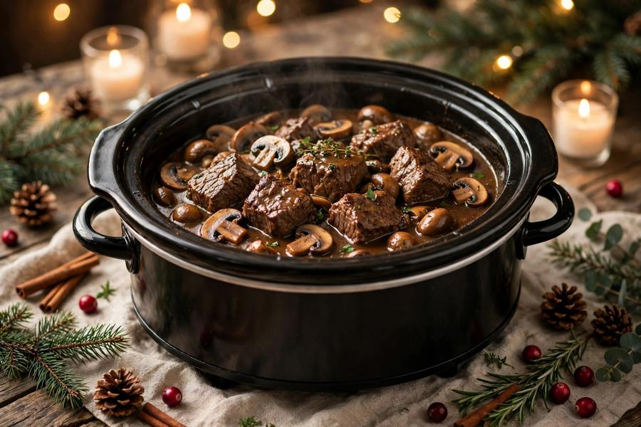
Cubes of beef stew meat turn meltingly tender after hours in a rich mushroom gravy made with beef broth, Worcestershire sauce, and thyme. The mushrooms soften into the sauce, the flour thickens it just enough, and the whole pot smells deeply savory. Spooned over mashed potatoes or noodles, it is a hearty Christmas dinner that feels like a celebration.
Ingredients
- 2 lbs beef stew meat
- 8 oz mushrooms
- 1 onion
- 2 cups beef broth
- 2 tbsp flour
- 1 tbsp Worcestershire sauce
- 1 tsp thyme
Directions
- Pat the beef stew meat dry with paper towels. Heat a large skillet over medium-high heat and brown the beef in batches, turning the pieces until they are seared on all sides, about 5 minutes per batch. Do not crowd the pan.
- Slice the mushrooms and dice the onion while the beef browns.
- Transfer the browned beef to the slow cooker. Add the mushrooms, onion, beef broth, flour, Worcestershire sauce, and thyme, stirring gently to combine and coat the beef.
- Cover and cook on low for 6 hours, until the beef is fork-tender and the gravy has thickened. Keep the lid on while it cooks.
- Stir the gravy once near the end of cooking, tasting and adjusting the seasoning if needed.
- Spoon the beef tips and mushroom gravy over hot mashed potatoes or cooked noodles and serve at once.
Food safety: cook the beef to 145°F (63°C).
3. Slow Cooker Honey Mustard Pork Chops

Thick pork chops bathe in a sweet, tangy sauce of honey, Dijon mustard, garlic, apple cider vinegar, and rosemary. The honey caramelizes gently during the long, slow cook while the mustard and vinegar keep the sauce from turning too sweet. The chops come out juicy and tender, glazed in a golden sauce that belongs on a Christmas table.
Ingredients
- 4 pork chops
- 1/2 cup honey
- 1/4 cup Dijon mustard
- 2 garlic cloves
- 1 tbsp apple cider vinegar
- 1 tsp rosemary
Directions
- Mince the garlic cloves. In a medium bowl, whisk together the honey, Dijon mustard, minced garlic, apple cider vinegar, and rosemary until smooth and well blended.
- Arrange the pork chops in a single layer in the bottom of the slow cooker.
- Pour the honey mustard sauce evenly over the chops, turning each one once so both sides are coated.
- Cover and cook on low for 4 hours, until the pork chops are tender and cooked through. Keep the lid on while they cook.
- Check the pork with a food thermometer to confirm it has reached 145°F, then let the chops rest in the slow cooker for 3 minutes.
- Lift the chops onto a serving platter and spoon the warm honey mustard sauce generously over the top. Serve at once.
Food safety: cook the pork to 145°F (63°C) and let it rest for 3 minutes before serving.
4. Slow Cooker Stuffed Cabbage Rolls
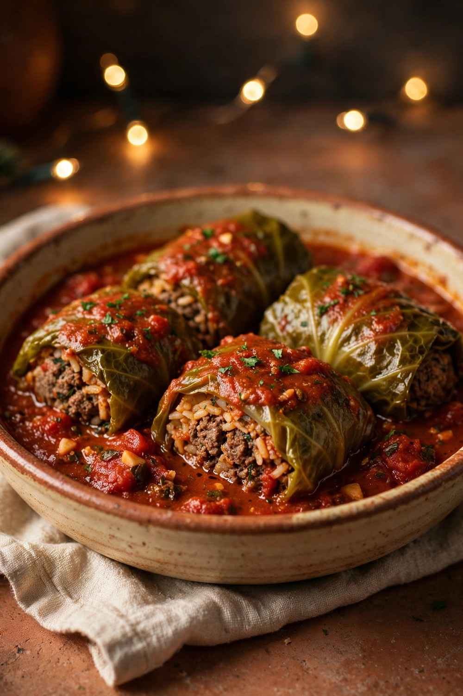
Tender cabbage leaves wrap a savory filling of ground beef, cooked rice, onion, and egg, then simmer for hours in a sweetened tomato sauce. The leaves turn silky, the filling stays juicy, and the sauce grows rich and mellow. It is old-fashioned comfort food, the kind of dish that makes a Christmas table feel like home.
Ingredients
- 1 head cabbage
- 1 lb ground beef
- 1 cup cooked rice
- 1 onion
- 1 egg
- 1 can (28 oz) tomato sauce
- 1 tbsp brown sugar
Directions
- Boil a large pot of water. Peel the leaves from the cabbage and blanch for 3 minutes, until pliable. Drain and cool slightly.
- Dice the onion. In a large bowl, mix the ground beef, cooked rice, onion, and egg until just combined. Do not overmix, or the filling will turn tough.
- Lay a leaf flat, spoon about 3 tablespoons of filling near the base, fold in the sides, and roll it up. Repeat with the remaining leaves and filling.
- Stir the tomato sauce and brown sugar together in the slow cooker until the sugar dissolves.
- Nestle the rolls seam-side down in the sauce in a snug layer, spooning a little sauce over the top.
- Cover and cook on low for 6 hours, until the rolls are tender and the beef is cooked through.
- Lift the rolls onto a platter, spoon the warm sauce over them, and serve.
Food safety: cook the ground beef to 160°F (71°C) — check with a food thermometer.
5. Slow Cooker Lasagna

This lasagna layers no-boil noodles, browned Italian sausage, marinara, and a creamy ricotta mixture with mozzarella and Parmesan, all baked slowly in the crockpot. The noodles turn tender, the cheese melts into every layer, and the edges get deliciously soft. It slices cleanly after a short rest and feeds a crowd with almost no hands-on work.
Ingredients
- 1 lb Italian sausage
- 1 jar (24 oz) marinara sauce
- 9 no-boil lasagna noodles
- 15 oz ricotta
- 2 cups shredded mozzarella
- 1/2 cup Parmesan
- 1 egg
Directions
- Brown the sausage in a large skillet over medium-high heat, breaking it into crumbles, until cooked through, about 8 minutes. Drain off the fat.
- In a medium bowl, stir together the ricotta, Parmesan, and egg until smooth.
- Spread a thin layer of marinara over the bottom of the slow cooker.
- Layer noodles, sauce, sausage, spoonfuls of ricotta mixture, and mozzarella in the slow cooker. Repeat until everything is used, finishing with sauce and mozzarella on top.
- Cover and cook on low for 4 hours, until the noodles are tender and the cheese is melted and bubbly. Keep the lid on.
- Turn off the slow cooker and let the lasagna rest for 10 minutes, so the layers set and slice cleanly.
- Cut into squares and serve warm with any extra sauce from the pot.
Food safety: cook the sausage to 160°F (71°C) — check with a food thermometer.
Pasta, chili & curry
Alfredo, ragu, turkey chili, white chicken chili and vegetable curry — one-pot comfort for a cold night.
6. Slow Cooker Chicken Alfredo
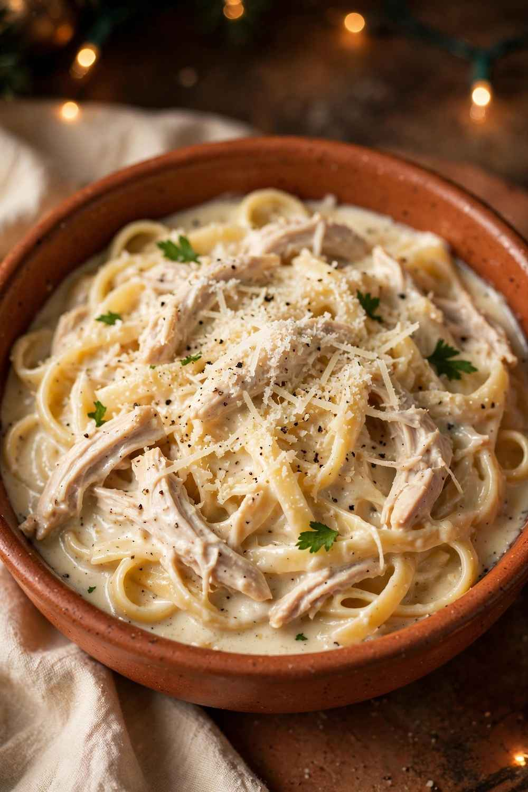
Chicken breasts simmer gently in heavy cream, Parmesan, garlic, and butter until they shred easily, turning the sauce rich, silky, and deeply savory. Tossed with fettuccine and finished with fresh parsley, it is pure comfort in a bowl. It tastes like a special-occasion dinner but cooks itself while you enjoy Christmas Day.
Ingredients
- 2 lbs chicken breasts
- 2 cups heavy cream
- 1 cup Parmesan
- 4 garlic cloves
- 2 tbsp butter
- 12 oz fettuccine
- chopped parsley
Directions
- Mince the garlic. Place the chicken breasts in a single layer in the slow cooker.
- Pour the cream over the chicken, then add the Parmesan, garlic, and butter, spreading them evenly over the top.
- Cover and cook on low for 5 hours, until the chicken is tender and cooked through. Keep the lid on so the sauce stays hot.
- While the chicken finishes, boil the fettuccine in salted water according to the package directions until al dente, about 10 minutes. Drain and set aside.
- Lift the chicken onto a cutting board and shred it with two forks.
- Stir the shredded chicken back into the sauce, mixing well so every strand is coated.
- Serve over the hot fettuccine with chopped parsley sprinkled over each serving.
Food safety: cook the chicken to 165°F (74°C) — check with a food thermometer.
7. Slow Cooker Beef Ragu with Pappardelle
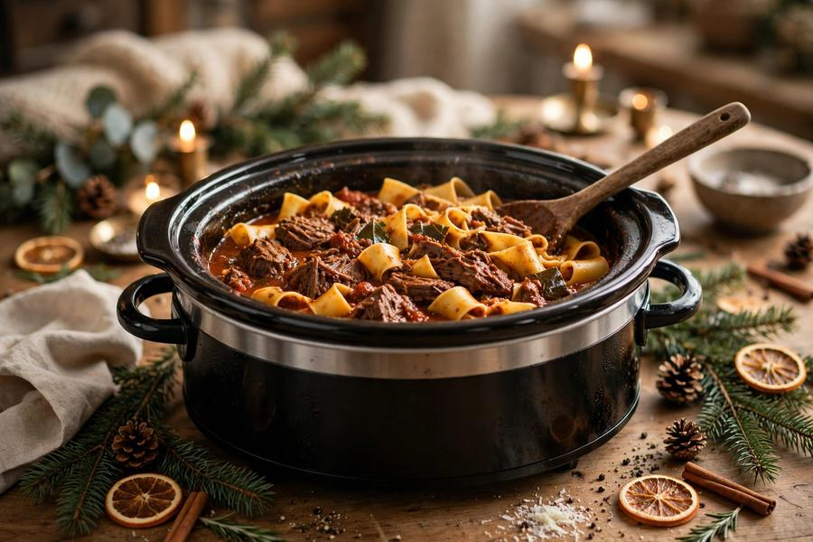
Ground beef braises for hours with crushed tomatoes, tomato paste, onion, garlic, and oregano into a thick, hearty ragu that clings to wide ribbons of pappardelle. The long, slow cook deepens the tomato sauce and softens the beef until it is rich and spoonable. Finished with Parmesan, it is a rustic, warming Christmas dinner.
Ingredients
- 2 lbs ground beef
- 1 can (28 oz) crushed tomatoes
- 1 onion
- 4 garlic cloves
- 2 tbsp tomato paste
- 1 tsp oregano
- 12 oz pappardelle
- Parmesan
Directions
- Dice the onion and mince the garlic. Brown the beef in a large skillet over medium-high heat with the onion and garlic, breaking it into crumbles, until cooked through, about 8 minutes. Drain off the fat.
- Transfer the beef, onion, and garlic to the slow cooker.
- Add the crushed tomatoes, tomato paste, and oregano, stirring well so the tomato paste is fully mixed in.
- Cover and cook on low for 6 hours, until the ragu is thick and rich. Keep the lid on, stirring once halfway through if you like.
- While the ragu finishes, boil the pappardelle in salted water according to the package directions until al dente, about 8 minutes. Drain.
- Taste the ragu and adjust the seasoning if needed.
- Serve the ragu over the hot pappardelle, with Parmesan over each serving. Serve at once.
Food safety: cook the ground beef to 160°F (71°C) — check with a food thermometer.
8. Slow Cooker Turkey Chili

Lean ground turkey simmers with diced tomatoes, kidney beans, black beans, chili powder, and cumin into a thick, hearty chili that warms a Christmas night. The beans turn creamy, the spices bloom in the long cook, and the turkey stays tender. Served with a dollop of sour cream, it is a crowd-pleasing pot that everyone comes back to for seconds.
Ingredients
- 2 lbs ground turkey
- 1 can (28 oz) diced tomatoes
- 1 can (15 oz) kidney beans
- 1 can (15 oz) black beans
- 1 onion
- 2 tbsp chili powder
- 1 tsp cumin
- sour cream
Directions
- Dice the onion. Brown the ground turkey in a large skillet over medium-high heat with the onion, breaking the turkey into crumbles, until cooked through, about 8 minutes. Drain off any fat.
- Drain and rinse the kidney beans and black beans.
- Transfer the browned turkey and onion to the slow cooker. Add the diced tomatoes with their juices, both beans, chili powder, and cumin.
- Stir everything together well so the spices are evenly spread through the chili.
- Cover and cook on low for 6 hours, until the chili is thick, the beans are tender, and the flavors have come together. Keep the lid on while it cooks.
- Stir the chili once near the end of cooking and taste it, adjusting the seasoning if needed.
- Ladle the chili into bowls and top each serving with a spoonful of sour cream. Serve hot.
Food safety: cook the ground turkey to 165°F (74°C) — check with a food thermometer.
9. Slow Cooker White Chicken Chili
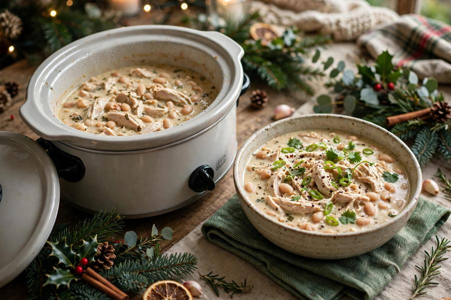
This creamy white chili pairs tender chicken with white beans, mild green chiles, onion, chicken broth, and cumin, finished with sour cream and shredded cheese. It is milder and silkier than a red chili, with a gentle warmth that suits a snowy Christmas evening. The chicken shreds right into the pot, making every spoonful hearty and comforting.
Ingredients
- 2 lbs chicken breasts
- 2 cans (15 oz) white beans
- 1 can (4 oz) green chiles
- 1 onion
- 4 cups chicken broth
- 1 tsp cumin
- 1/2 cup sour cream
- shredded cheese
Directions
- Dice the onion. Drain and rinse the white beans.
- Place the chicken breasts in a single layer in the bottom of the slow cooker.
- Add the white beans, green chiles, diced onion, chicken broth, and cumin, stirring gently so the chicken is surrounded by the beans and broth.
- Cover and cook on low for 6 hours, until the chicken is tender and cooked through. Keep the lid on while it cooks.
- Lift the chicken onto a cutting board and shred it with two forks.
- Stir the shredded chicken back into the chili, then stir in the sour cream until the chili turns creamy and smooth. Let it sit for 5 minutes to warm through.
- Ladle into bowls and top each serving with shredded cheese. Serve hot.
Food safety: cook the chicken to 165°F (74°C) — check with a food thermometer.
10. Slow Cooker Vegetable Curry

Sweet potatoes, chickpeas, and onion simmer in coconut milk with curry powder and ginger until everything is tender and fragrant. Fresh spinach wilts in at the end, adding color and a gentle green note. Served over rice, it is a warm, spiced, meat-free Christmas dinner that feels festive and generous, with a creamy sauce worth spooning over every bite.
Ingredients
- 2 sweet potatoes
- 1 can (15 oz) chickpeas
- 1 can (14 oz) coconut milk
- 2 tbsp curry powder
- 1 onion
- 2 cups spinach
- 1 tbsp ginger
- rice for serving
Directions
- Peel the sweet potatoes and cut them into even 1-inch cubes so they cook at the same rate. Dice the onion and mince or grate the ginger.
- Drain and rinse the chickpeas.
- Add the sweet potatoes, chickpeas, coconut milk, curry powder, diced onion, and ginger to the slow cooker, stirring well so the curry powder is mixed through the coconut milk.
- Cover and cook on low for 5 hours, until the sweet potatoes are tender when pierced with a fork. Keep the lid on while it cooks.
- While the curry finishes, cook the rice according to the package directions and keep it warm.
- Stir the spinach into the hot curry and replace the lid for 5 minutes, until the spinach has wilted into the sauce.
- Taste and adjust the seasoning if needed, then spoon the curry over the hot rice and serve at once.
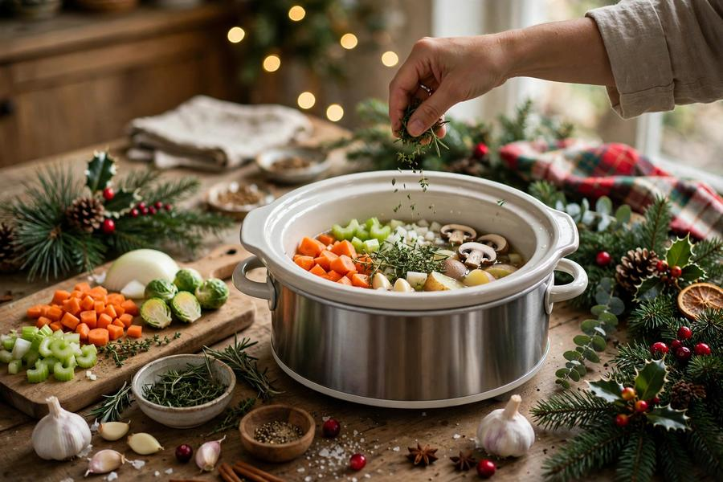
Curry, teriyaki & barbecue
Coconut curry, beef and broccoli, teriyaki chicken, orange chicken and pulled barbecue chicken.
11. Slow Cooker Coconut Curry Chicken

Chicken thighs cook slowly in creamy coconut milk whisked with red curry paste and ginger, with onion and bell pepper softening into the sauce. The curry is gently spiced rather than fiery, with a rich, fragrant sauce that coats every piece of chicken. Served over rice, it brings a warm, exotic note to the Christmas table.
Ingredients
- 2 lbs chicken thighs
- 1 can (14 oz) coconut milk
- 2 tbsp red curry paste
- 1 onion
- 1 bell pepper
- 1 tbsp ginger
- rice for serving
Directions
- Dice the onion and bell pepper. Mince or grate the ginger.
- In a medium bowl, whisk the coconut milk with the red curry paste and ginger until smooth and evenly pink, with no streaks of curry paste left.
- Place the chicken thighs in a single layer in the bottom of the slow cooker. Scatter the diced onion and bell pepper over and around them.
- Pour the coconut curry sauce evenly over the chicken and vegetables.
- Cover and cook on low for 5 hours, until the chicken is tender and cooked through. Keep the lid on while it cooks.
- While the curry finishes, cook the rice according to the package directions and keep it warm.
- Check the chicken with a food thermometer to confirm it has reached 165°F, then spoon the chicken and sauce over the hot rice. Serve at once.
Food safety: cook the chicken to 165°F (74°C) — check with a food thermometer.
12. Slow Cooker Beef and Broccoli

Cubes of beef stew meat turn tender in a savory sauce of soy sauce, brown sugar, garlic, and sesame oil, finished with bright green broccoli and a cornstarch-thickened glaze. The sauce is salty, sweet, and glossy, clinging to every piece. Served over rice, it tastes like your favorite takeout, made slowly and easily at home.
Ingredients
- 2 lbs beef stew meat
- 4 cups broccoli florets
- 1/2 cup soy sauce
- 1/4 cup brown sugar
- 3 garlic cloves
- 1 tbsp sesame oil
- 1 tbsp cornstarch
- rice for serving
Directions
- Mince the garlic. Cut the broccoli into even florets, about 1 to 2 inches across.
- Place the beef in the slow cooker. Add the soy sauce, brown sugar, garlic, and sesame oil, stirring to coat the beef.
- Cover and cook on low for 5 hours, until the beef is tender. Keep the lid on.
- While the beef finishes, cook the rice according to the package directions and keep it warm.
- In a small bowl, whisk the cornstarch with 2 tablespoons of cold water until smooth.
- Stir the cornstarch mixture into the slow cooker, add the broccoli, and press it into the sauce. Cook 30 more minutes, until the broccoli is bright green and crisp-tender and the sauce has thickened.
- Spoon the beef, broccoli, and sauce over the hot rice and serve at once.
Food safety: cook the beef to 145°F (63°C).
13. Slow Cooker Teriyaki Chicken

Chicken thighs slow-cook in a sweet-savory glaze of teriyaki sauce, brown sugar, garlic, and rice vinegar until they fall apart at the touch of a fork. The sauce turns glossy and rich, and a sprinkle of sesame seeds adds a nutty finish. Served over rice, it is an easy, hands-off Christmas dinner that kids and adults both love.
Ingredients
- 2 lbs chicken thighs
- 1/2 cup teriyaki sauce
- 1/4 cup brown sugar
- 2 garlic cloves
- 1 tbsp rice vinegar
- 1 tsp sesame seeds
- rice for serving
Directions
- Mince the garlic. In a medium bowl, whisk the teriyaki sauce, brown sugar, garlic, and rice vinegar until the sugar dissolves.
- Place the chicken thighs in a single layer in the slow cooker.
- Pour the sauce evenly over the chicken, turning each thigh once so both sides are coated.
- Cover and cook on low for 5 hours, until the chicken is tender and cooked through. Keep the lid on.
- While the chicken finishes, cook the rice according to the package directions and keep it warm.
- Lift the chicken onto a cutting board and shred it with two forks, or slice it into strips. Return it to the slow cooker and stir it through the sauce.
- Sprinkle with sesame seeds and serve over the hot rice, spooning extra sauce over each serving.
Food safety: cook the chicken to 165°F (74°C) — check with a food thermometer.
14. Slow Cooker Orange Chicken

Chicken thighs simmer in a sticky, citrusy sauce of orange juice, barbecue sauce, brown sugar, soy sauce, and fresh orange zest. The orange keeps the sauce bright while the barbecue sauce adds a smoky depth, and the long cook lets the flavors soak into the chicken. Spooned over rice, it is sweet, tangy, and wonderfully festive.
Ingredients
- 2 lbs chicken thighs
- 1 cup orange juice
- 1/2 cup barbecue sauce
- 1/4 cup brown sugar
- 2 tbsp soy sauce
- zest of 1 orange
- rice for serving
Directions
- Zest the orange, then squeeze or measure out the orange juice. In a medium bowl, whisk together the orange juice, barbecue sauce, brown sugar, soy sauce, and orange zest until the sugar dissolves and the sauce is smooth.
- Place the chicken thighs in a single layer in the bottom of the slow cooker.
- Pour the orange sauce evenly over the chicken, turning each thigh once so both sides are coated.
- Cover and cook on low for 5 hours, until the chicken is tender and cooked through. Keep the lid on while it cooks so the sauce stays hot and glossy.
- While the chicken finishes, cook the rice according to the package directions and keep it warm.
- Check the chicken with a food thermometer to confirm it has reached 165°F.
- Serve the chicken over the hot rice, spooning the sticky orange sauce generously over each serving. Serve at once.
Food safety: cook the chicken to 165°F (74°C) — check with a food thermometer.
15. Slow Cooker BBQ Pulled Chicken
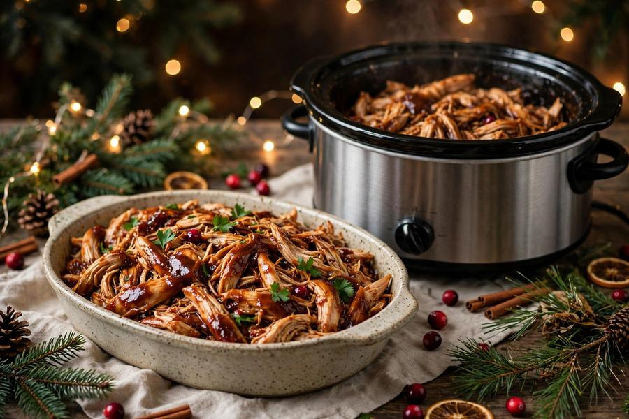
Chicken breasts cook slowly in smoky barbecue sauce with brown sugar, smoked paprika, and apple cider vinegar until they shred into juicy strands. The sauce turns sweet, tangy, and deeply savory, coating every piece. Piled onto soft buns, it is a relaxed, crowd-friendly Christmas dinner that lets everyone build their own sandwich.
Ingredients
- 2 lbs chicken breasts
- 1 1/2 cups barbecue sauce
- 1 tbsp brown sugar
- 1 tsp smoked paprika
- 1 tbsp apple cider vinegar
- buns for serving
Directions
- Place the chicken breasts in a single layer in the bottom of the slow cooker.
- In a medium bowl, stir together the barbecue sauce, brown sugar, smoked paprika, and apple cider vinegar until well combined.
- Pour the sauce evenly over the chicken, making sure each breast is coated.
- Cover and cook on low for 5 hours, until the chicken is tender and cooked through. Keep the lid on while it cooks.
- Lift the chicken onto a cutting board and shred it with two forks into fine strands.
- Return the shredded chicken to the slow cooker and stir it through the barbecue sauce, letting it soak up the sauce for 5 minutes.
- Check that the chicken has reached 165°F, then pile it generously onto the buns and serve at once, with any extra sauce on the side.
Food safety: cook the chicken to 165°F (74°C) — check with a food thermometer.
Carnitas, enchiladas & bakes
Carnitas, enchiladas, stuffed peppers, eggplant Parmesan and ratatouille — slow-cooked comfort from every corner.
16. Slow Cooker Carnitas
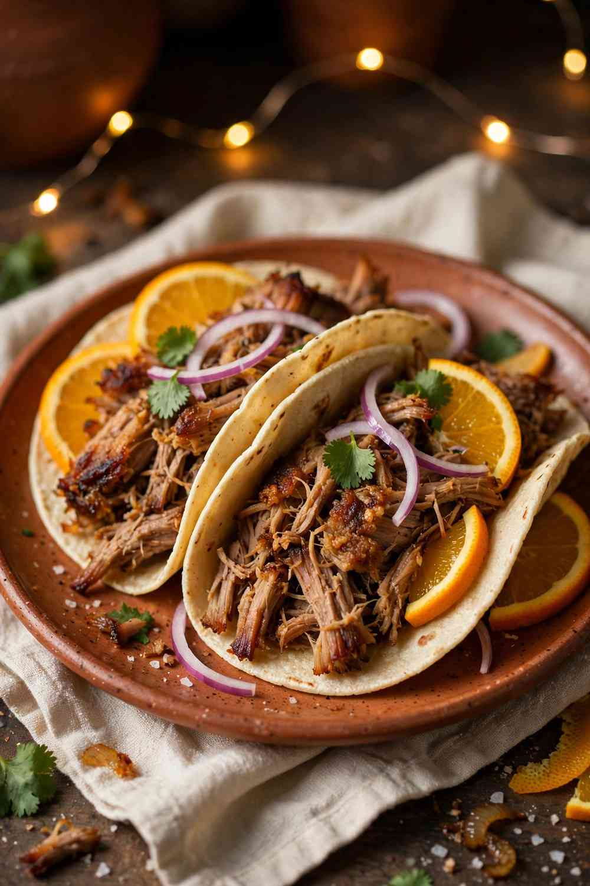
A whole pork shoulder rubs with cumin and oregano, then braises for hours over onion, garlic, and orange halves until it shreds with a fork. A quick blast under the broiler crisps the edges, giving each bite both juicy meat and crackly bits. Tucked into warm tortillas, it is a festive, hands-off Christmas main built for sharing.
Ingredients
- 1 pork shoulder (4 lbs)
- 1 onion
- 4 garlic cloves
- 1 orange
- 1 tsp cumin
- 1 tsp oregano
- tortillas for serving
Directions
- Pat the pork dry. Mix the cumin and oregano with salt and pepper, then rub the mixture all over the pork.
- Quarter the onion, peel the garlic, and cut the orange in half.
- Scatter the onion, garlic, and orange halves in the slow cooker, then set the pork on top.
- Cover and cook on low for 8 hours, until the pork is very tender and shreds easily. Keep the lid on.
- Lift the pork onto a cutting board and shred it with two forks, discarding any large pieces of fat. Check that it has reached 145°F.
- Spread the pork on a rimmed baking sheet and crisp it under the broiler for 5 minutes, watching closely, until the edges turn golden and crisp.
- Warm the tortillas and serve the carnitas in them, with cooking juices spooned over the top.
Food safety: cook the pork to 145°F (63°C) — carnitas are done when tender.
17. Slow Cooker Chicken Enchiladas

Chicken breasts cook in enchilada sauce until tender, then get shredded, rolled into flour tortillas with melted cheddar and green chiles, and baked slowly under more sauce and cheese. The tortillas soften, the cheese turns bubbly, and the sauce soaks into every layer. Served with sour cream, it is a cozy, cheesy Christmas dinner with no oven needed.
Ingredients
- 2 lbs chicken breasts
- 1 can (19 oz) enchilada sauce
- 8 flour tortillas
- 2 cups shredded cheddar
- 1 can (4 oz) green chiles
- sour cream
Directions
- Place the chicken breasts in a single layer in the slow cooker.
- Pour half of the enchilada sauce over the chicken so the breasts are coated.
- Cover and cook on low for 5 hours, until the chicken is tender and cooked through. Keep the lid on.
- Lift the chicken onto a cutting board and shred it with two forks. Mix it with the green chiles and 1 cup of the cheddar in a bowl.
- Spoon the mixture down the center of each tortilla, roll it up snugly, and place it seam-side down in the slow cooker in a snug single layer.
- Pour the remaining sauce over the rolls and sprinkle the remaining 1 cup of cheddar over the top.
- Cover and cook on low for 1 more hour, until the cheese is melted and bubbly. Serve with sour cream.
Food safety: cook the chicken to 165°F (74°C) — check with a food thermometer.
18. Slow Cooker Stuffed Peppers
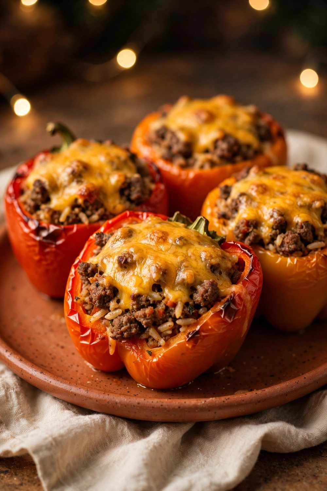
Sweet bell peppers hold a hearty filling of ground beef, cooked rice, diced tomatoes, onion, and Italian seasoning, then cook slowly under a blanket of melted cheddar. The peppers turn tender but still hold their shape, and the filling stays juicy and savory. It is a colorful, self-contained Christmas dinner that looks as good as it tastes.
Ingredients
- 6 bell peppers
- 1 lb ground beef
- 1 cup cooked rice
- 1 can (14 oz) diced tomatoes
- 1 onion
- 1 cup shredded cheddar
- 1 tsp Italian seasoning
Directions
- Cut the tops off the peppers and remove the seeds and membranes. Trim the bottoms just enough so they stand upright, without cutting through them.
- Dice the onion. In a large bowl, mix the beef, rice, diced tomatoes with their juices, onion, and Italian seasoning until just combined. Do not overmix.
- Spoon the filling into each pepper, packing it gently and mounding it slightly above the rim.
- Stand the peppers upright in the slow cooker, snug together so they support each other.
- Sprinkle the cheddar evenly over the tops.
- Cover and cook on low for 5 hours, until the peppers are tender and the beef is cooked through. Keep the lid on.
- Check the beef has reached 160°F, then lift the peppers onto a platter and serve warm.
Food safety: cook the ground beef to 160°F (71°C) — check with a food thermometer.
19. Slow Cooker Eggplant Parmesan
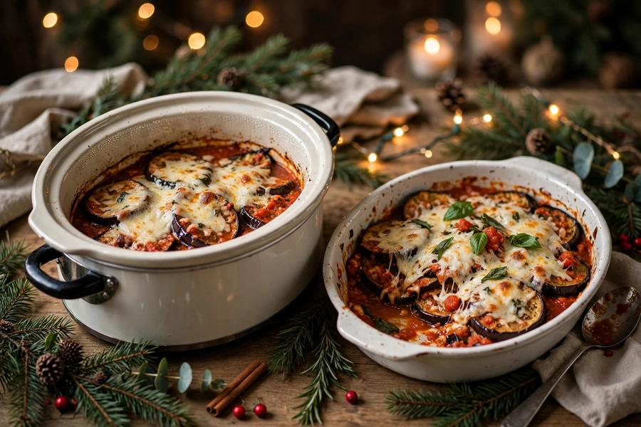
Slices of eggplant dipped in egg and breadcrumbs layer with marinara sauce, mozzarella, and Parmesan, then bake slowly until tender and bubbly. The eggplant turns silky, the crumbs stay lightly crisp at the edges, and the cheese melts into every layer. Finished with Italian seasoning, it is a warm, meat-free Christmas main that feels like a treat.
Ingredients
- 2 eggplants
- 1 jar (24 oz) marinara sauce
- 2 cups shredded mozzarella
- 1/2 cup Parmesan
- 1 cup breadcrumbs
- 2 eggs
- 1 tsp Italian seasoning
Directions
- Slice the eggplants into rounds about 1/2 inch thick.
- Beat the eggs in a shallow bowl. Pour the breadcrumbs into a second shallow bowl.
- Dip each slice in the beaten egg, letting the excess drip off, then press it into the breadcrumbs to coat both sides.
- Spread a thin layer of marinara over the bottom of the slow cooker.
- Layer breaded eggplant, sauce, mozzarella, and Parmesan in the slow cooker. Repeat until everything is used, finishing with sauce and cheese on top.
- Cover and cook on low for 4 hours, until the eggplant is tender and the cheese is melted and bubbly. Keep the lid on.
- Sprinkle with Italian seasoning and rest for 5 minutes so the layers set. Serve warm with sauce from the pot.
20. Slow Cooker Ratatouille

Eggplant, zucchini, bell pepper, onion, and garlic simmer in crushed tomatoes with olive oil and herbs de Provence until everything turns soft, sweet, and deeply fragrant. The vegetables melt into each other while keeping their shape, and the sauce grows rich. Serve it as a side or over rice for a light, Provençal Christmas dinner.
Ingredients
- 1 eggplant
- 2 zucchini
- 1 bell pepper
- 1 can (28 oz) crushed tomatoes
- 1 onion
- 4 garlic cloves
- 2 tbsp olive oil
- 1 tbsp herbs de Provence
Directions
- Dice the eggplant into 1-inch cubes. Slice the zucchini into half-moons about 1/2 inch thick. Dice the bell pepper and onion, and mince the garlic.
- Add all the chopped vegetables to the slow cooker, spreading them in an even layer.
- Pour the crushed tomatoes over the vegetables, then add the minced garlic, olive oil, and herbs de Provence.
- Stir everything together gently so the tomatoes, oil, and herbs are spread through the vegetables.
- Cover and cook on low for 5 hours, until the vegetables are soft and tender. Keep the lid on while they cook, stirring once halfway through if you like.
- Taste and season with salt and pepper, adjusting the herbs if needed.
- Serve warm as a side dish, or spooned generously over hot rice as a main. Serve at once.
One-pot comfort & classics
Risotto, baked beans, cabbage and sausage, sausage and peppers, and a classic meatloaf — the cozy finish.
21. Slow Cooker Mushroom Risotto
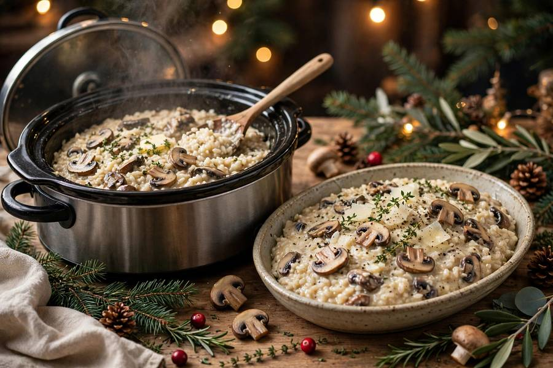
Arborio rice cooks slowly with sautéed mushrooms, onion, and vegetable broth into a creamy risotto with no constant stirring. The rice turns tender and velvety while the mushrooms add a deep, earthy flavor, and Parmesan and lemon juice finish it with richness and brightness. Topped with parsley, it is an elegant, hands-off Christmas dinner.
Ingredients
- 2 cups arborio rice
- 8 oz mushrooms
- 1 onion
- 4 1/2 cups vegetable broth
- 1/2 cup Parmesan
- 2 tbsp butter
- 1 tbsp lemon juice
- chopped parsley
Directions
- Slice the mushrooms and dice the onion. Melt the butter in a large skillet over medium heat.
- Sauté the mushrooms and onion in the butter for 5 minutes, stirring often, until the mushrooms turn golden and the onion is soft.
- Transfer them to the slow cooker. Add the arborio rice and vegetable broth, stirring so the rice is covered.
- Cover and cook on low for 2 hours, until the rice is tender and creamy. Stir once halfway through, then replace the lid.
- Check the rice; it should be tender with a creamy texture. If it looks too thick, stir in a splash of warm broth.
- Stir in the Parmesan and lemon juice until the cheese melts and the sauce turns glossy.
- Spoon into bowls and top with chopped parsley. Serve at once, while hot and creamy.
22. Slow Cooker Baked Beans with Brown Sugar

Navy beans simmer for hours with brown sugar, molasses, mustard, and onion, turning sweet, smoky, and deeply savory, with crisp crumbled bacon folded through and scattered on top. The sauce thickens into a glossy glaze that coats every bean. It is a rich, old-fashioned side or main that belongs beside any Christmas roast.
Ingredients
- 4 cans (15 oz) navy beans
- 8 slices bacon
- 1/2 cup brown sugar
- 1/4 cup molasses
- 2 tbsp mustard
- 1 onion
Directions
- Dice the onion. Drain and rinse the navy beans.
- Cook the bacon in a large skillet over medium heat, turning the slices, until crisp, about 8 minutes. Drain on paper towels, crumble, and set aside.
- Add the beans, brown sugar, molasses, mustard, onion, and half the bacon to the slow cooker, stirring well so the sugar and molasses are mixed through.
- Cover and cook on low for 4 hours, until the beans are tender and the sauce has thickened into a glossy glaze. Keep the lid on, stirring once halfway through if you like.
- Stir the beans and taste, adjusting the sweetness if needed.
- Spoon into a serving dish and top with the remaining bacon. Serve warm.
Food safety: cook the bacon until crisp.
23. Slow Cooker Cabbage and Sausage

Smoked sausage, cabbage, potatoes, and onion cook together in chicken broth with caraway seeds into a hearty, one-pot comfort dish. The cabbage turns silky and sweet, the potatoes soak up the smoky broth, and the sausage flavors everything it touches. It is simple, warming, and deeply satisfying on a cold Christmas night.
Ingredients
- 1 lb smoked sausage
- 1 head cabbage
- 2 potatoes
- 1 onion
- 2 cups chicken broth
- 1 tsp caraway seeds
- salt and pepper
Directions
- Slice the sausage into rounds about 1/2 inch thick. Chop the cabbage into 2-inch pieces, peel and dice the potatoes, and dice the onion.
- Add the sausage, cabbage, potatoes, and onion to the slow cooker, layering them loosely.
- Pour the broth over everything, then sprinkle in the caraway seeds and season with salt and pepper.
- Stir gently once so the broth and seasoning are spread through the pot.
- Cover and cook on low for 6 hours, until the cabbage is tender and the potatoes are soft. Keep the lid on.
- Check the sausage is steaming hot throughout, then stir and taste, adjusting the salt and pepper if needed.
- Ladle into bowls and serve warm, with plenty of broth spooned over each serving.
Food safety: heat the sausage until steaming hot throughout.
24. Slow Cooker Sausage and Peppers
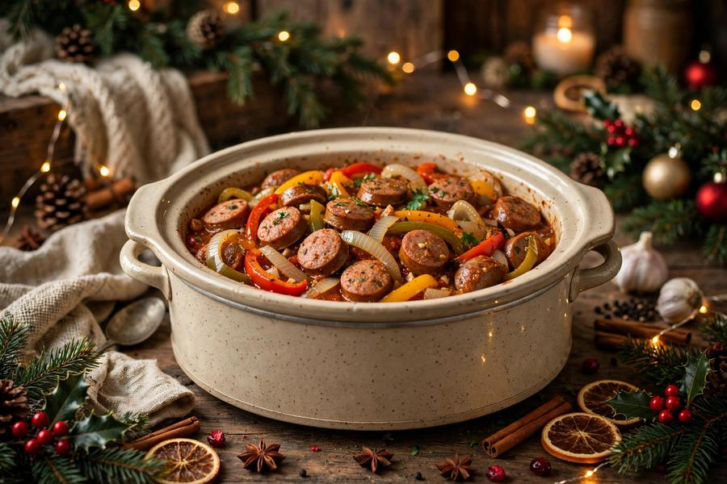
Italian sausage braises slowly with bell peppers, onion, diced tomatoes, garlic, and Italian seasoning into a classic, hearty dish. The peppers turn sweet and soft, the tomatoes melt into a savory sauce, and the sausage stays juicy. Served in rolls or over pasta, it is a festive, crowd-pleasing Christmas dinner with real Italian comfort.
Ingredients
- 2 lbs Italian sausage
- 3 bell peppers
- 1 onion
- 1 can (14 oz) diced tomatoes
- 2 garlic cloves
- 1 tsp Italian seasoning
- rolls for serving
Directions
- Slice the bell peppers into strips and slice the onion. Mince the garlic cloves.
- Brown the Italian sausage in a large skillet over medium-high heat, turning the links, until browned on all sides, about 8 minutes. Drain off any fat.
- Transfer the browned sausage to the slow cooker. Add the sliced peppers, onion, diced tomatoes with their juices, minced garlic, and Italian seasoning.
- Stir gently so the peppers, tomatoes, and seasoning surround the sausage.
- Cover and cook on low for 5 hours, until the sausage is cooked through and the peppers are tender. Keep the lid on while it cooks.
- Check the sausage with a food thermometer to confirm it has reached 160°F.
- Serve the sausage and peppers piled into warm rolls, or spooned over cooked pasta, with plenty of the tomato sauce over the top. Serve at once.
Food safety: cook the sausage to 160°F (71°C) — check with a food thermometer.
25. Slow Cooker Meatloaf with Brown Sugar Glaze

Ground beef mixed with breadcrumbs, eggs, onion, and garlic powder shapes into a loaf and cooks slowly under a sweet glaze of ketchup, brown sugar, and mustard. The glaze caramelizes gently while the meatloaf stays moist and tender inside. Sliced thick after a short rest, it is a classic Christmas dinner that tastes like home.
Ingredients
- 2 lbs ground beef
- 1 cup breadcrumbs
- 2 eggs
- 1 onion
- 1/2 cup ketchup
- 1/4 cup brown sugar
- 1 tbsp mustard
- 1 tsp garlic powder
Directions
- Dice the onion. In a large bowl, mix the beef, breadcrumbs, eggs, onion, and garlic powder with your hands until just combined. Do not overmix, or the meatloaf will turn tough.
- Shape the mixture into a firm loaf about 9 inches long, pressing it together so it holds its shape.
- Line the slow cooker with foil, leaving the edges overhanging, and place the loaf in the center.
- In a small bowl, mix the ketchup, brown sugar, and mustard until smooth, then spread the glaze over the top and sides of the loaf.
- Cover and cook on low for 5 hours, until the meatloaf is cooked through and firm. Keep the lid on.
- Check the meatloaf has reached 160°F in the center with a food thermometer.
- Lift it out using the foil and rest for 10 minutes before slicing, so the juices settle and the slices hold together. Serve warm.
Food safety: cook the meatloaf to 160°F (71°C) — check with a food thermometer.

Make-ahead & serving tips
Brown meats and bloom spices before they go into the slow cooker — those few minutes build the flavor the long cook cannot. Keep the lid on while cooking so the pot stays hot enough, and resist stirring until the last hour. Most of these mains hold on warm for an hour or two, so dinner waits for your guests. Leftovers keep covered in the fridge for up to 3 days — reheat gently and add a splash of broth to sauces that thickened overnight.
Related articles
More roundups from the same table:
- 20+ New Year's Eve Dinner Ideas for Family and Friends — festive mains, from roast beef and salmon to pasta and slow cooker favorites.
- 25+ Christmas Side Dishes for Your Holiday Table — roasted vegetables, creamy potatoes, stuffing and cranberry sauce.
- 35+ Easy Christmas Appetizers for a Crowd — dips, bites, cheese boards and warm starters for your holiday party.
- 25+ Christmas Pie Recipes for a Sweet Holiday Table — classic apple, pumpkin and pecan pies plus festive tarts and hand pies for Christmas Day.
Keep exploring
- Browse the Lunch & Dinner roundups — mains and sides for midday and evening tables.
- Browse all six categories — breakfast, lunch and dinner, desserts, air fryer, healthy recipes, and appetizers.
- More about the kitchen — what The Tasty Recipe Co is and how it works.
About The Tasty Recipe Co: Learn how we research, organize and review our food collections — see our About Us and Editorial Policy pages.
Recipe results can vary with ingredients, equipment, and technique. See our Disclaimer for food-safety and allergy notes.